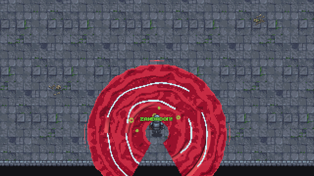
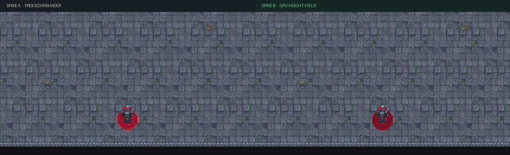
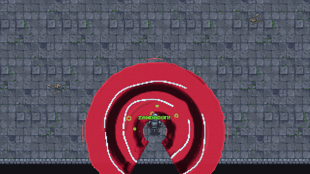
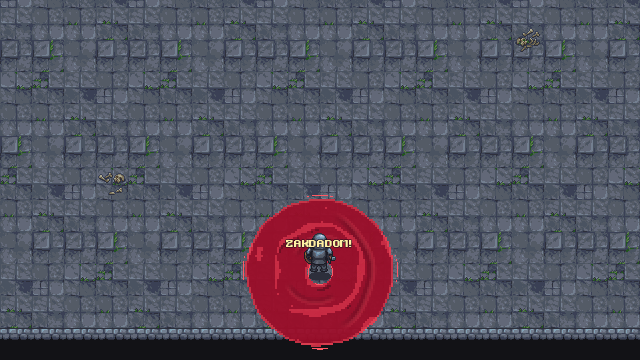
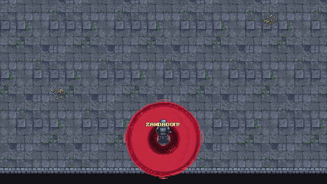
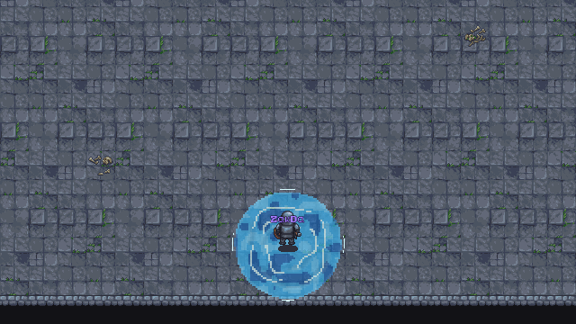
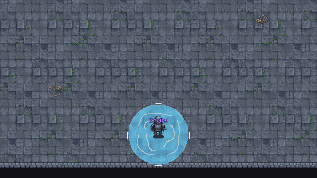
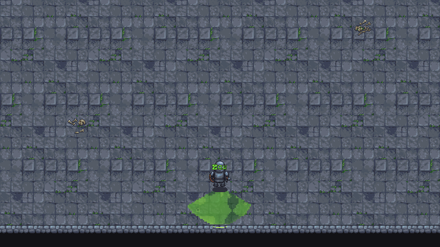
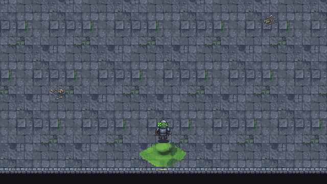

Spike B vinner den tekniska gaten.
GPU-versionen behåller spellets exakta PBAoE-form men ger oss ett verkligt tillstånd som ordimpulser kan störa. Den har mörkare dalar, vågor som fortplantas och materialreaktioner som kan byggas ut utan en specialritad effekt för varje kristallkombination.
Fast pixeltäthet är nu genomförd. När cirkeln växer tillkommer fler 2×2-celler; befintliga pixlar, vågkammar, bubblor och kanter skalas inte upp. Nästa konstpass ska minska rena vita stormband, göra Blood ännu tjockare i rörelsen och låta Venom-bubblor bryta vågkammen tydligare.
Se skillnaden i rörelse
Båda laddningarna går från ZAK till ZAK DA och vidare mot ZAKDADOM. Titta främst efter vad som händer när DA läggs till: i B lever tidigare vågor vidare och möter den nya impulsen.


Samma system, olika materia
Formen kommer fortfarande från ordet och kristallen. GPU-fältet ändrar ytan inuti formen; det inför ingen siktning och flyttar aldrig spellen från spelaren.
Blood
Hög viskositet, långsammare dämpning och tjocka ringimpulser. Målet är vikande vågkammar snarare än partikelsprut.
Storm
Högre styvhet, snabbare fronter och elektriska highlights längs de höjder som redan finns.
Venom
Formen kan bli en bakåtriktad sektor eller halvmåne. Korrosiv reaktion injicerar kokpunkter i bärarmaterialet.






Vad som byggdes
- Tre R32F-texturer roterar mellan föregående, nuvarande och nästa höjdfält.
- Simuleringen täcker ett fast område i spelvärlden. En större spell avslöjar fler celler i fältet i stället för att förstora texturen.
- Varje nytt ord skapar en radial impuls. Fältet nollställs först när hela casten tar slut, så ZAK kan påverkas av DA och DOM.
- Blood, Storm och Venom skickar allmänna egenskaper — viskositet, energi, kokning och reaktion — inte hårdkodade kombinationsnamn.
- Samma
SpellCastPlanklipper shader och träffyta till radie, sektor, riktning och hålcentrum. - V växlar live mellan Spike A och Spike B. Om compute saknas faller B automatiskt tillbaka till A:s renderer.
256×256fast world-space-fält
768 KiBtre höjdtexturer per aktiv yta
≈3,93 Mcelluppdateringar/sek vid 60 Hz
1 inputsamma player-centered cast
Verifierat i den spelbara prototypen
Körningen gjordes med Godot 4.6.2, Vulkan Forward+ och NVIDIA RTX 3090. GPU-testet bekräftar aktiv compute och riktiga dispatches för samtliga recept.
- Smoke, combat, spell grammar, workbench, Rat Blood-loop, camp-meta och hela femrumsrutten: 7/7 godkända.
- Regressionstest: medium och full radie måste ge samma world-pixelstorlek, medan antalet renderade celler måste öka.
- A/B-fångsten startar båda renderers från samma scen och misslyckas om GPU-fältet inte blir redo eller utför arbete.
- Headless-tester utan RenderingDevice fortsätter genom shaderfallbacken utan att påverka spelmekanik eller sparfil.
- Forward+ är nu projektets aktiva renderer; 3D har inte återinförts och spelet är fortfarande äkta top-down 2D-pixelspel.